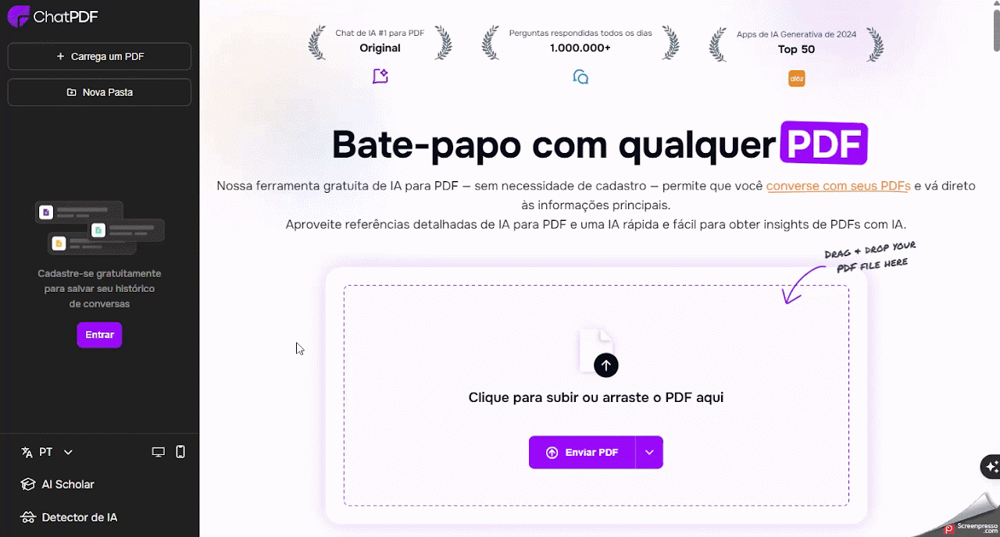
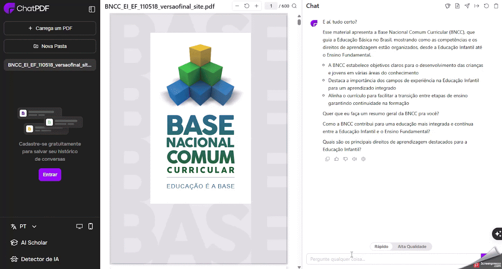
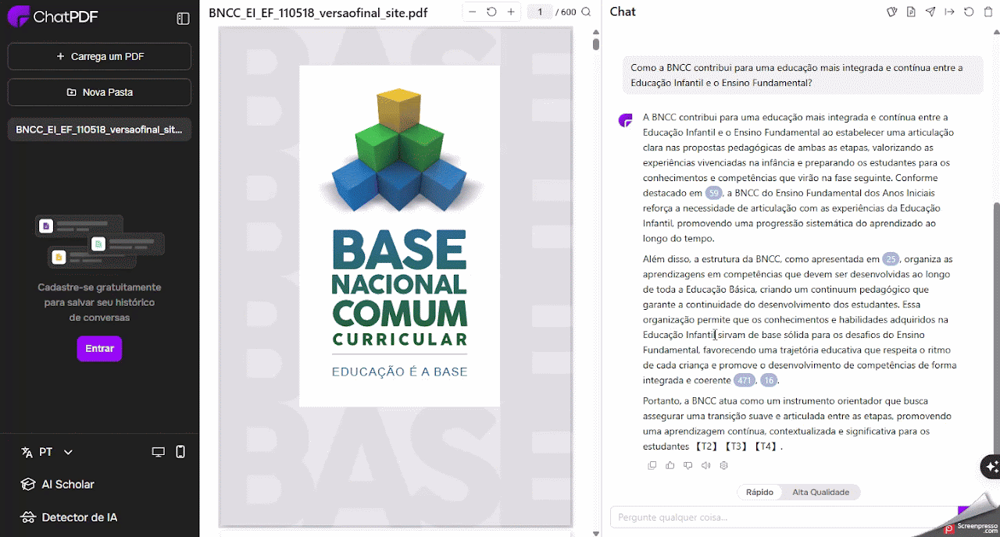

ChatPDF
Auxiliar o professor na análise e compreensão de documentos extensos, como legislações educacionais, planos de aula e materiais didáticos, permitindo extrair informações relevantes de forma rápida e eficiente.
Ficha técnica
Visão geral
O que é o ChatPDF?
O ChatPDF é uma plataforma online que utiliza inteligência artificial para transformar documentos PDF em conversas interativas. Com ele, é possível fazer perguntas sobre o conteúdo de um PDF e obter respostas imediatas, facilitando a compreensão de textos complexos, como artigos acadêmicos, contratos e relatórios.
Fluxo de uso
Como utilizar o ChatPDF
Etapa 1
Acessando o ChatPDF
- Acesse o site oficial: https://www.chatpdf.com/pt.
- Faça o upload do seu PDF.
- Clique em “Solte o PDF aqui” ou arraste o arquivo diretamente para a área indicada.
- Você também pode inserir a URL de um PDF hospedado online.
- Aguarde o processamento: o ChatPDF analisará o documento e apresentará um resumo com perguntas sugeridas.

Etapa 2
Interagindo com o documento
- Utilize as perguntas sugeridas clicando em uma das opções geradas automaticamente.
- Faça suas próprias perguntas digitando na caixa de texto qualquer dúvida específica sobre o conteúdo do PDF.
- Navegue pelas respostas, que incluem referências diretas ao trecho do documento correspondente.

Etapa 3
Salvando e compartilhando
- Compartilhar conversa: clique no ícone de compartilhamento para obter um link direto da sua interação, que pode ser enviado por e-mail ou redes sociais.
- Baixar transcrição: utilize o ícone de download para salvar a conversa completa em formato PDF para referência futura.

Boas práticas
Dicas adicionais
- Multilinguismo: O ChatPDF suporta documentos em diversos idiomas e pode responder em português, mesmo que o PDF esteja em outra língua.
- Limitações da versão gratuita:
- Até 3 arquivos PDF por dia.
- Limite de 120 páginas por documento.
- Até 50 perguntas diárias.
- Versão paga: Oferece recursos adicionais, como suporte a documentos maiores e número ilimitado de perguntas